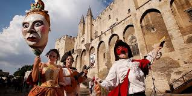
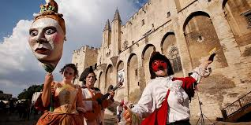

El pasado sábado, el Parque Central se llenó de color y alegría con la celebración del primer Festival Cultural de la Comunidad, un evento diseñado para destacar la riqueza cultural de nuestra región. Más de 15,000 personas asistieron a este festival, que incluyó música en vivo, danza, comida típica y actividades para todas las edades. Los organizadores, junto con artistas locales, trabajaron arduamente para crear un ambiente festivo y acogedor.